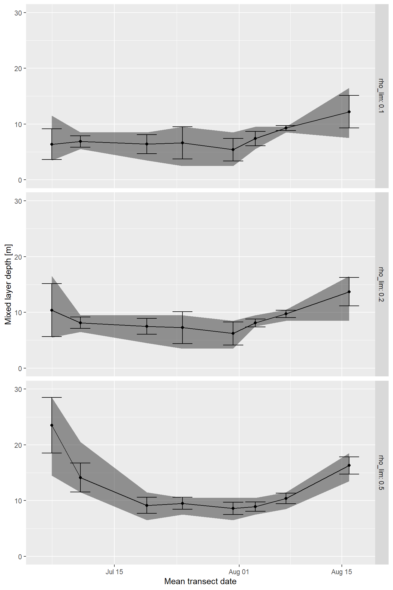
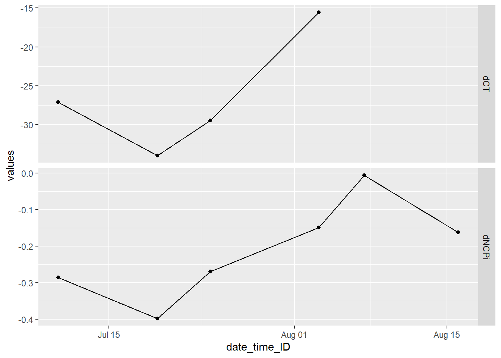
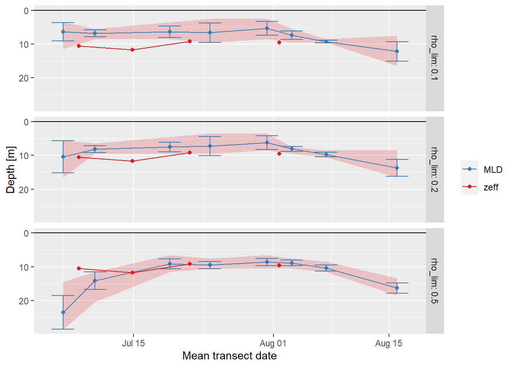

Last updated: 2020-03-20
Checks: 7 0
Knit directory: BloomSail/
This reproducible R Markdown analysis was created with workflowr (version 1.6.0). The Checks tab describes the reproducibility checks that were applied when the results were created. The Past versions tab lists the development history.
Great! Since the R Markdown file has been committed to the Git repository, you know the exact version of the code that produced these results.
Great job! The global environment was empty. Objects defined in the global environment can affect the analysis in your R Markdown file in unknown ways. For reproduciblity it’s best to always run the code in an empty environment.
The command set.seed(20191021) was run prior to running the code in the R Markdown file. Setting a seed ensures that any results that rely on randomness, e.g. subsampling or permutations, are reproducible.
Great job! Recording the operating system, R version, and package versions is critical for reproducibility.
Nice! There were no cached chunks for this analysis, so you can be confident that you successfully produced the results during this run.
Great job! Using relative paths to the files within your workflowr project makes it easier to run your code on other machines.
Great! You are using Git for version control. Tracking code development and connecting the code version to the results is critical for reproducibility. The version displayed above was the version of the Git repository at the time these results were generated.
Note that you need to be careful to ensure that all relevant files for the analysis have been committed to Git prior to generating the results (you can use wflow_publish or wflow_git_commit). workflowr only checks the R Markdown file, but you know if there are other scripts or data files that it depends on. Below is the status of the Git repository when the results were generated:
Ignored files:
Ignored: .Rhistory
Ignored: .Rproj.user/
Ignored: data/Finnmaid_2018/
Ignored: data/Maps/
Ignored: data/Ostergarnsholm/
Ignored: data/TinaV/
Ignored: data/_merged_data_files/
Ignored: data/_summarized_data_files/
Note that any generated files, e.g. HTML, png, CSS, etc., are not included in this status report because it is ok for generated content to have uncommitted changes.
There are no past versions. Publish this analysis with wflow_publish() to start tracking its development.
library(tidyverse)
library(seacarb)
library(oce)
library(marelac)1m gridded, downcast profiles were used.
df <-
read_csv(here::here("Data/_merged_data_files", "BloomSail_CTD_HydroC_CT.csv"))Seawater density Rho was determined from S, T, and p according to TEOS-10.
df <- df %>%
mutate(rho = swSigma(salinity = sal, temperature = tem, pressure = dep/10))
# seacarb = rho(S = sal, T = tem, P = pres),
# marelac = sw_dens(S = sal, t = tem, p = pres + 1, method = "Gibbs")Mixed layer depth (MLD) was determined based on the difference between density at the surface and at depth, for a range of density criteria
# density criterion
df <- expand_grid(df, rho_lim = c(0.1,0.2,0.5))
df <- df %>%
group_by(ID, date_time_ID, station, rho_lim) %>%
arrange(dep) %>%
mutate(d_rho = rho - first(rho)) %>%
mutate(layer = if_else(d_rho > rho_lim, "deep", "surface")) %>%
ungroup()
MLD <- df %>%
group_by(ID, date_time_ID, station, rho_lim) %>%
filter(d_rho > rho_lim) %>%
summarise(MLD = min(dep)) %>%
ungroup()
df <- full_join(df, MLD)df %>%
filter(dep < 30) %>%
arrange(dep) %>%
ggplot(aes(rho, dep))+
geom_hline(aes(yintercept = MLD, col=as.factor(rho_lim)))+
geom_path()+
scale_y_reverse()+
scale_color_discrete(name="Rho lim")+
facet_grid(ID~station)Overview density profiles at stations (P01-P14) and cruise dates (ID). Horizontal lines indicate determined MLD
MLD_sum <- MLD %>%
select(-station) %>%
group_by(ID, date_time_ID, rho_lim)%>%
summarise_all(list(~mean(.),~sd(.),~min(.), ~max(.))) %>%
ungroup()
MLD_sum %>%
ggplot()+
geom_ribbon(aes(date_time_ID, ymin = min, ymax = max), alpha = 0.5)+
geom_path(aes(date_time_ID, mean))+
geom_errorbar(aes(date_time_ID, ymin = mean-sd, ymax = mean+sd))+
geom_point(aes(date_time_ID, mean))+
labs(x="Mean transect date", y="Mixed layer depth [m]")+
ylim(0,30)+
facet_grid(rho_lim~., labeller = label_both)
Rho, S, and T profiles were plotted individually pdf here.
df_long <- df %>%
pivot_longer(cols = c("sal", "tem", "rho"), names_to = "parameter", values_to = "value")
pdf(file=here::here("output/Plots/MLD",
"profiles_MLD_individual.pdf"), onefile = TRUE, width = 9, height = 5)
for(i_ID in unique(df_long$ID)){
for(i_station in unique(df_long$station)){
# i_ID <- unique(df_long$ID)[1]
# i_station <- unique(df_long$station)[1]
if (nrow(df_long %>% filter(ID == i_ID, station == i_station)) > 0){
print(
df_long %>%
arrange(date_time) %>%
filter(ID == i_ID,
station == i_station) %>%
ggplot(aes(value,dep))+
geom_hline(aes(yintercept = MLD, col=as.factor(rho_lim)))+
geom_path()+
scale_y_reverse(limits = c(30,0))+
scale_color_discrete(name="Rho lim")+
labs(y="Depth [m]", title = str_c(i_ID," | ",i_station))+
facet_wrap(~parameter, scales = "free_x")+
theme_bw()
)
}
}
}
dev.off()
rm(i_ID, i_station)The effective NCP penetration depth, zeff, was calculated as the ratio of the observed inremental change of the depth integrated NCP, divided by the change in surface CT.
CT_ts <-
read_csv(here::here("Data/_merged_data_files", "BloomSail_CTD_HydroC_CT_cumulative_timeseries.csv"))
CT_profiles <-
read_csv(here::here("Data/_merged_data_files", "BloomSail_CTD_HydroC_CT_cumulative_profiles.csv"))
CT_conc_surf <-
CT_profiles %>%
filter(dep == 3.5,
parameter == "CT",
sign == "neg") %>%
group_by(date_time_ID) %>%
summarise(dCT = mean(diff_value)) %>%
ungroup()
NCP_integ <- CT_ts %>%
filter(sign == "neg") %>%
group_by(ID, date_time_ID) %>%
summarise(dNCPi = sum(dCT)) %>%
ungroup()
CT <- full_join(CT_conc_surf, NCP_integ)
rm(CT_conc_surf, NCP_integ, CT_ts, CT_profiles)
CT <- CT %>%
mutate(zeff = (dNCPi/dCT)*1e3)
CT_long <- CT %>%
pivot_longer(c(dCT, dNCPi), names_to = "parameter", values_to = "values")
CT_long %>%
ggplot(aes(date_time_ID, values))+
geom_path()+
geom_point()+
facet_grid(parameter~., scales = "free_y")
df <- full_join(MLD_sum, CT)
date_grid <- df %>%
select(ID, date_time_ID) %>%
unique() %>%
arrange(date_time_ID) %>%
mutate(diff_date = difftime(date_time_ID, lag(date_time_ID))/2,
mean_date = date_time_ID - diff_date) %>%
select(ID, mean_date)
df <- full_join(df, date_grid)
rm(date_grid)
df %>%
ggplot()+
geom_ribbon(aes(date_time_ID, ymin = min, ymax = max, fill="MLD"), alpha = 0.2)+
geom_path(aes(date_time_ID, mean, col="MLD"))+
geom_errorbar(aes(date_time_ID, ymin = mean-sd, ymax = mean+sd, col="MLD"))+
geom_point(aes(date_time_ID, mean, col="MLD"))+
geom_point(aes(mean_date, zeff, col="zeff"))+
geom_line(aes(mean_date, zeff, col="zeff"))+
labs(x="Mean transect date", y="Depth [m]")+
scale_y_reverse()+
scale_color_brewer(palette = "Set1", direction = -1, name="")+
scale_fill_brewer(palette = "Set1", direction = -1, guide=FALSE)+
facet_grid(rho_lim~., labeller = label_both)
sessionInfo()R version 3.5.0 (2018-04-23)
Platform: x86_64-w64-mingw32/x64 (64-bit)
Running under: Windows 10 x64 (build 18363)
Matrix products: default
locale:
[1] LC_COLLATE=English_United States.1252
[2] LC_CTYPE=English_United States.1252
[3] LC_MONETARY=English_United States.1252
[4] LC_NUMERIC=C
[5] LC_TIME=English_United States.1252
attached base packages:
[1] stats graphics grDevices utils datasets methods base
other attached packages:
[1] marelac_2.1.9 shape_1.4.4 seacarb_3.2.12 oce_1.2-0
[5] gsw_1.0-5 testthat_2.3.1 forcats_0.4.0 stringr_1.4.0
[9] dplyr_0.8.3 purrr_0.3.3 readr_1.3.1 tidyr_1.0.0
[13] tibble_2.1.3 ggplot2_3.3.0 tidyverse_1.3.0
loaded via a namespace (and not attached):
[1] Rcpp_1.0.2 lubridate_1.7.4 here_0.1 lattice_0.20-35
[5] assertthat_0.2.1 zeallot_0.1.0 rprojroot_1.3-2 digest_0.6.22
[9] R6_2.4.0 cellranger_1.1.0 backports_1.1.5 reprex_0.3.0
[13] evaluate_0.14 httr_1.4.1 highr_0.8 pillar_1.4.2
[17] rlang_0.4.5 readxl_1.3.1 rstudioapi_0.10 rmarkdown_2.0
[21] labeling_0.3 munsell_0.5.0 broom_0.5.3 compiler_3.5.0
[25] httpuv_1.5.2 modelr_0.1.5 xfun_0.10 pkgconfig_2.0.3
[29] htmltools_0.4.0 tidyselect_0.2.5 workflowr_1.6.0 crayon_1.3.4
[33] dbplyr_1.4.2 withr_2.1.2 later_1.0.0 grid_3.5.0
[37] nlme_3.1-137 jsonlite_1.6 gtable_0.3.0 lifecycle_0.1.0
[41] DBI_1.0.0 git2r_0.26.1 magrittr_1.5 scales_1.0.0
[45] cli_1.1.0 stringi_1.4.3 fs_1.3.1 promises_1.1.0
[49] xml2_1.2.2 generics_0.0.2 vctrs_0.2.0 RColorBrewer_1.1-2
[53] tools_3.5.0 glue_1.3.1 hms_0.5.2 yaml_2.2.0
[57] colorspace_1.4-1 rvest_0.3.5 knitr_1.26 haven_2.2.0